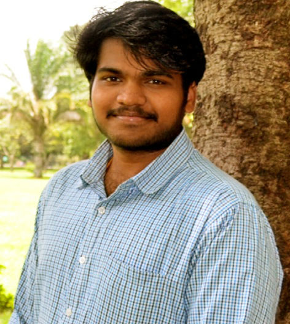

|
Prabhu Prasad B M
I am currently working as an Assistant Professor at Indian Institute of Information Technoology Dharwad, India.
I have a Ph.D from SPARK Lab , Dept. of Computer Science and Engineering, National Institute of Technology Karnataka, Surathkal, under the supervision of Dr. Basavaraj Talawar..
My research focuses on the field of Network-on-Chips, FPGAs, Simulation acceleration, High-performance computing.
Email /
Google Scholar /
|

|
|
Latest News
- Paper accepted in ACM TODAES, CSSP, WPC.
Publications
Journal
Conference
Posters
|
|